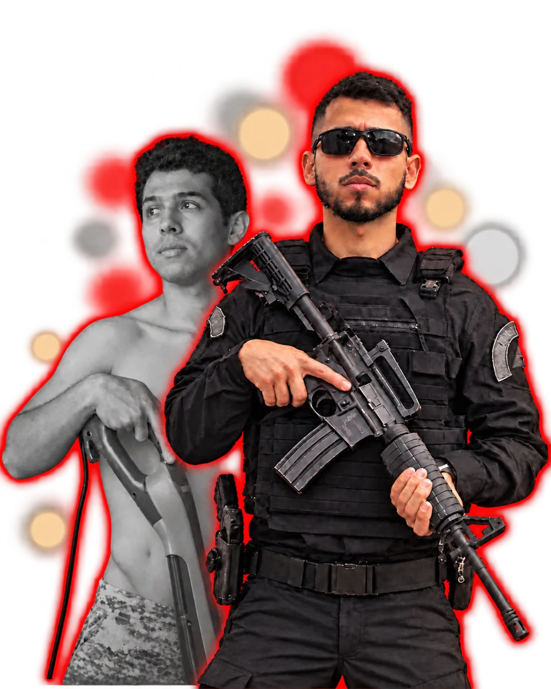
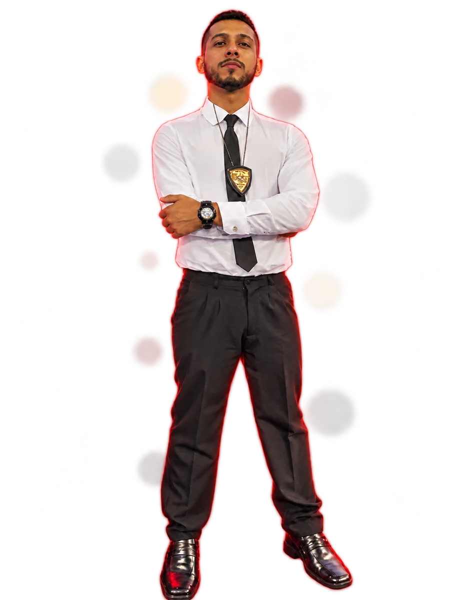
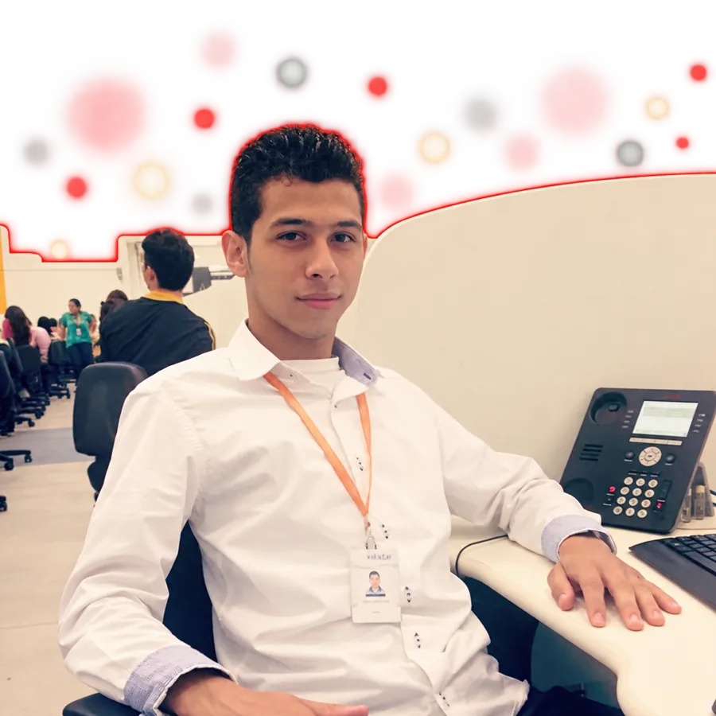
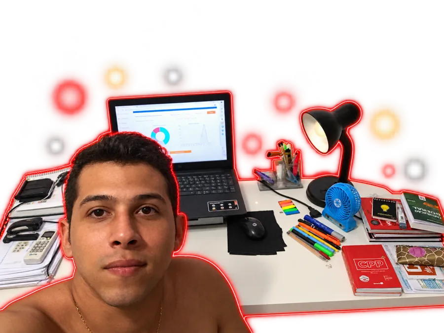
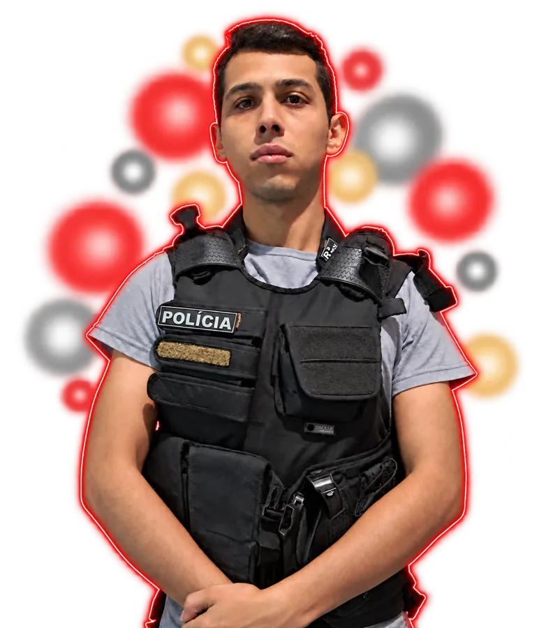
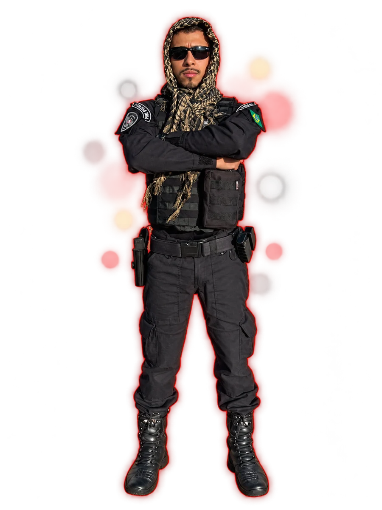

Você não precisa de mais um curso. Precisa de direção até a prova.
Na Turma Rota da Farda, o Jonathan guia você semana a semana até a prova da [PMPI]: o que estudar, em que ordem, como revisar e como treinar no padrão da banca. Feito para quem trabalha e estuda.

"Se eu assinar mais um curso, eu passo."
Todo mês o Jonathan recebe mensagem de aluno com TEC, Gran e Estratégia que continua reprovando. O curso dá conteúdo. O que aprova é saber o que estudar, resolver questões, revisar e simular, com constância.
Não é quanto conteúdo você consome. É quanta direção você tem.
Os 4 pilares que aprovaram o Jonathan
Organizados semana a semana na plataforma, para você abrir e saber o que estudar no dia, sem perder 40 minutos decidindo.
Teoria
Só o que o edital cobra, na ordem do peso de cada matéria.
Questões
Treino no padrão da [banca], todo dia.
Revisão
Revisões programadas e caderno de erros para não esquecer.
Simulados
Simulados com ranking para ver onde você está.
Turma Rota da Farda [PMPI 2026]
Até o dia da prova
Vagas de diagnóstico limitadas- ✓Call coletiva semanal com o Jonathan1h30 ao vivo, às 20h, com correção de rota e dúvidas. Fica gravada.só aqui
- ✓Plano do edital na plataformaCronograma até a prova, revisões, caderno de erros e ranking. Até a prova + 3 meses.R$ 97
- ✓Call individual de diagnóstico20 minutos só com o Jonathan para ajustar o seu plano.R$ 97
- ✓Kit do Edital completo[500] questões comentadas, simulados e edital verticalizado.R$ 37
- ✓Mapas mentais de Português e Informática121 mapas para revisão rápida.R$ 29,80
- ✓Grupo da Turma com plantão de dúvidasHorário fixo nos dias úteis. Simulados com ranking e reta final antes da prova.só aqui
11 reprovações até a primeira farda

Jonathan já fez de tudo: foi atendente de call center e estudou em escola pública. Depois de ver a casa alagar, decidiu mudar de vida pelo concurso. O sonho era a farda. Hoje é policial penal, professor de legislação em cursos preparatórios e mentor de quem também quer mudar de vida e conquistar a farda.
- 18 anosSeparador de mercadorias no turno da noite, das 22h às 5h, fazendo curso técnico.
- DepoisAtendente de call center e outros empregos, estudando à noite.
- 21 anosCasado, os dois ganhando um salário mínimo, morando de aluguel. A casa alagou. Ali decidiu mudar de vida pelo concurso.
- 2019Aprovado na Guarda Municipal, depois de estudar o que a prova cobra, e não só o que gostava.
- 2021Aprovado na Polícia Penal do Pará.
- HojePolicial penal, professor de legislação em cursos preparatórios e mentor de quem quer conquistar a farda.
A mesma pessoa. Outra realidade.
Ninguém nasceu pronto. O Jonathan estudou à noite, reprovou 11 vezes e só passou quando trocou o "estudar o que gosto" pelo "estudar o que a prova cobra".




[Trecho real do depoimento em vídeo do Marcel, com autorização por escrito]
Gente comum que vestiu a farda
Histórias de quem trabalhava, estava começando do zero ou já tinha reprovado.
Personal trainer, filho recém-nascido e montando a própria academia. Seguiu o plano à risca e passou, depois em outros concursos.
Tinha 18 anos e nunca tinha estudado para concurso. Fez exatamente o que foi combinado e hoje está lotado em Belém.
Passou na objetiva da Polícia Penal, reprovou no TAF e não desistiu. Foi aprovado na PM e na Polícia Civil do Ceará.
Depoimentos publicados só com autorização por escrito dos alunos.
É para você se
Trabalha e estuda, já tem curso mas não sabe por onde começar, reprovou e sente que não evolui, ou está começando e quer fazer certo desde o início.
Não é para você se
Procura fórmula mágica ou aprovação fácil. Aqui o Jonathan faz a parte dele e você faz a sua.
Garantia de 7 dias + condição de continuidade
Não gostou nos primeiros 7 dias? Devolvemos 100%. E se você cumprir 80% das metas na plataforma e não for aprovado, entra na próxima Turma pela metade do preço.
Perguntas frequentes
A Turma tem aulas de conteúdo?
Não. A Turma diz o que estudar, em que ordem e como treinar. Use o curso que você já tem; se não tem, o kit e a plataforma já guiam o seu estudo.
Eu falo com o Jonathan no WhatsApp?
Na Turma, você fala com ele nas calls semanais, na call de diagnóstico e no plantão do grupo. O atendimento individual no WhatsApp é da Mentoria Individual.
E se eu perder a call?
Todas as calls ficam gravadas na plataforma.
Quanto tempo por dia eu preciso?
O plano se ajusta às horas que você tem. A Turma foi pensada para quem trabalha.
Até quando vai a Turma?
Até o dia da prova do edital [PMPI 2026]. A plataforma fica liberada por mais 3 meses depois da prova.